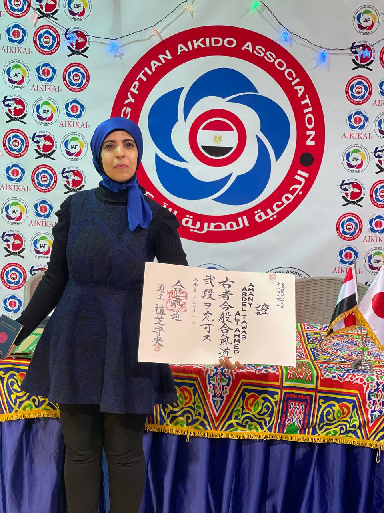
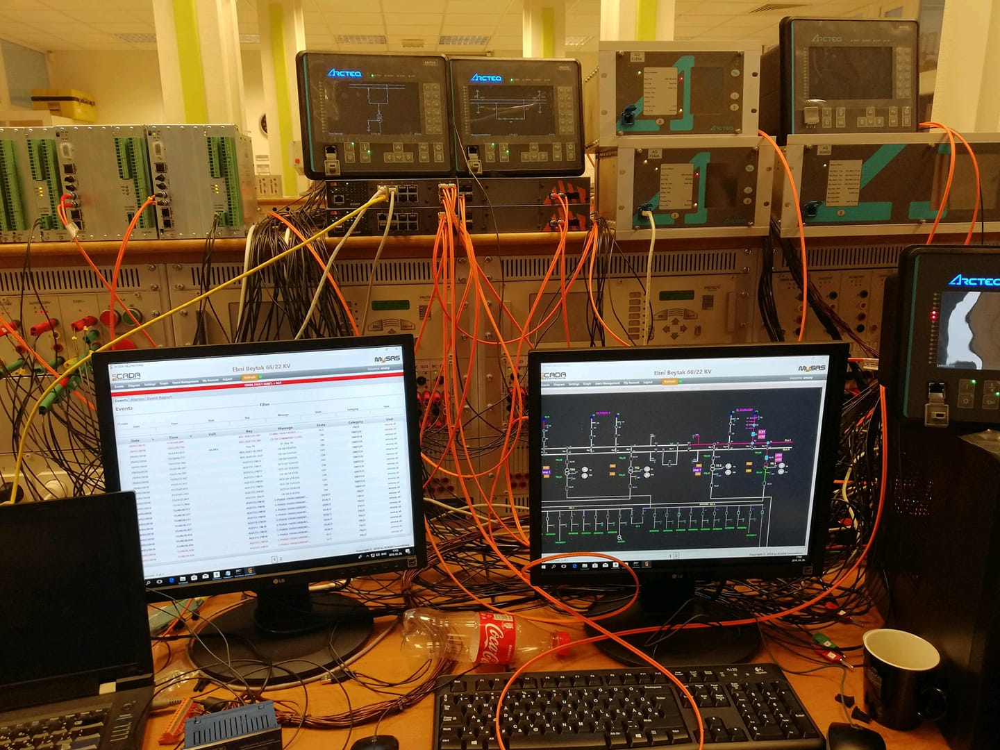
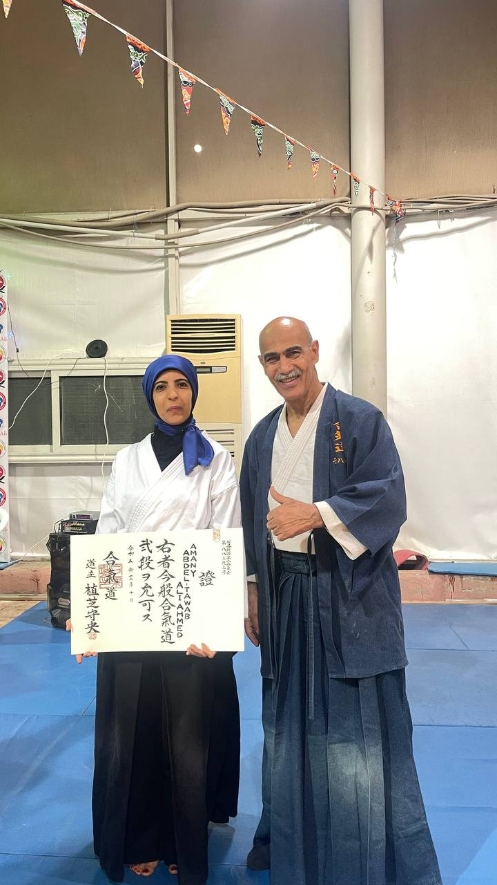
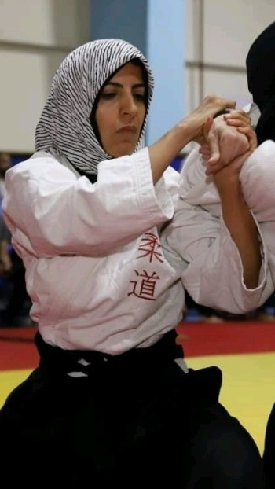

Amany Abd El-Tawab Ali
أماني عبد التواب علي
Female Aikido Instructor & Coach | Aikikai 3rd Dan (Sandan) & Fukushidoin | Communication Engineer | Senior Software Engineer
مدربة أيكيدو 3 دان معتمدة من الأيكيكاي | مدربة دفاع عن النفس | مهندسة اتصالات وبرمجيات
Aikido Instructor, Coach & Trainer in Egypt – Cairo | Aikido Classes and Self-Defense Training for Women & Children
مدربة أيكيدو في مصر والقاهرة – مدربة فنون قتالية ودفاع عن النفس للسيدات والأطفال
About Me | نبذة عني
I am Amany Abd El-Tawab Ali, a Communication Engineer and Senior Software Engineer with 10+ years of experience in Full-Stack Java development and Salesforce enterprise systems.
Alongside my engineering career, I am an Aikikai 3rd Dan (Sandan) Aikido Instructor, certified by Aikikai Hombu Dojo in Tokyo, Japan, and a Fukushidoin. I provide Aikido instruction and self-defense training in Cairo, Egypt, with a focus on women, children and beginners.
My professional interests include martial arts instruction, women's self-defense, sports science and the integration of technology into personal safety and community empowerment.
أنا أماني عبد التواب علي، مهندسة اتصالات ومهندسة برمجيات أولى بخبرة تزيد عن 10 سنوات في تطوير الأنظمة والبرمجيات باستخدام Java وSalesforce وحلول المؤسسات.
إلى جانب عملي الهندسي، أنا مدربة أيكيدو 3 دان (سان دان) معتمدة من الأيكيكاي في طوكيو، اليابان، وحاصلة على شهادة Fukushidoin. أقدم تدريب الأيكيدو والدفاع عن النفس في القاهرة، مع التركيز على السيدات والأطفال والمبتدئين.
أهتم بتدريب الأيكيدو والدفاع عن النفس للسيدات، والبحث العلمي، وتوظيف التكنولوجيا في تعزيز الأمان الشخصي وتمكين المرأة.
Female Aikido Instructor in Egypt | مدربة أيكيدو في مصر
Looking for a female Aikido instructor in Egypt, an Aikido coach in Cairo, an Aikido trainer in Egypt, or women's self-defense classes? I am Amany Ali, an Aikikai 3rd Dan Aikido instructor and Fukushidoin based in Cairo, Egypt. I offer Aikido instruction and self-defense training for women and children. Beginners are welcome.
My instruction is based on Aikikai Aikido practice and includes fundamental movements, techniques, balance, coordination, body movement and practical self-defense skills.
Professional Qualifications
- Rank: 3rd Dan (Sandan) Black Belt – Aikikai Hombu Dojo, Tokyo, Japan.
- Instructor Certification: Fukushidoin – Aikikai Hombu Dojo, Tokyo, Japan.
- Coaching Education: Egyptian Olympic Committee foundational coaching certification (Aikido specialty).
Aikido Instruction & Training
- Aikido instruction and coaching in Cairo, Egypt.
- Women's self-defense training and self-protection skills.
- Aikido training for children and young practitioners.
- Beginner-friendly Aikido classes and fundamental training.
- Participation in Aikido examinations and technical evaluation.
Aikido and self-defense training opportunities for women and children in Cairo, Egypt. Beginners are welcome. Contact me to ask about available classes and training details.
برامج تدريب الأيكيدو والدفاع عن النفس للسيدات والأطفال في القاهرة، مصر. المبتدئون مرحب بهم. يمكنكم التواصل للاستفسار عن المجموعات ومواعيد التدريب.
Ask About Aikido Classes | استفسر عن التدريبمدربة أيكيدو في مصر والقاهرة | مدربة دفاع عن النفس للسيدات
إذا كنتِ تبحثين عن مدربة أيكيدو في مصر، أو مدربة أيكيدو في القاهرة، أو مدربة اياكيدو، أو مدربة آيكيدو، أو مدربة الأيكيدو، فأنا أقدم تدريب الأيكيدو والدفاع عن النفس للسيدات والأطفال في القاهرة، مصر.
أنا أماني عبد التواب علي، مدربة أيكيدو حاصلة على الدرجة الثالثة دان (3 دان) من الأيكيكاي، وحاصلة على شهادة Fukushidoin، وأقدم تدريبًا قائمًا على مبادئ وممارسات أيكيدو الأيكيكاي.
يشمل التدريب أساسيات الأيكيدو، والحركة والتوازن والتوافق الحركي، والتطبيقات الفنية ومهارات الدفاع عن النفس. كما أن المبتدئات والمبتدئين مرحب بهم.
مدربة فنون قتالية ومدربة دفاع ذاتي للسيدات
إذا كنتِ تبحثين عن مدربة دفاع عن النفس للسيدات، أو مدربة دفاع ذاتي، أو مدربة فنون قتالية في مصر، أو مدربة أيكيدو معتمدة، أو مدربة أيكيدو للأطفال، يمكنك التواصل للاستفسار عن التدريب والمجموعات المتاحة في القاهرة.
تدريب الأيكيدو للسيدات والأطفال والمبتدئين
يشمل التدريب تعليم الأيكيدو للسيدات، وتدريب الأيكيدو للأطفال، وتعليم أساسيات الأيكيدو للمبتدئين، وتدريبات الدفاع عن النفس والمهارات الحركية والتوازن والتوافق.
سواء كان بحثك عن مدربة أيكيدو، مدربات أيكيدو في مصر، مدربة أيكيدو في القاهرة، مدربة دفاع عن النفس، أو تدريب الأيكيدو للسيدات، يمكنك التواصل معي لمعرفة تفاصيل التدريب المتاحة.
Aikido Coaching & Women's Self-Defense in Cairo
Amany Ali is a female Aikido instructor, Aikido coach and Aikido trainer in Cairo, Egypt. Her qualifications include Aikikai 3rd Dan (Sandan) and Fukushidoin. Her training interests include Aikido instruction, women's self-defense, Aikido for children and beginner Aikido practice.
People looking for an Aikido instructor near Cairo, a female martial arts instructor in Egypt, Aikido lessons for women, Aikido classes for kids, a women's self-defense instructor or beginner self-defense training can contact her for information about available training.
Engineering-Based Aikido Coaching | منهج تدريبي يجمع بين الهندسة والأيكيدو
Structured. Analytical. Progressive. Practical.
My background in Communication Engineering and Software Engineering shapes the way I approach Aikido instruction. I believe effective martial arts training should be structured, analytical, progressive and practical.
Rather than focusing only on memorizing techniques, I encourage students to understand the mechanics behind each movement, develop body awareness, and build the ability to apply techniques with control and purpose.
My coaching approach combines the traditional principles of Aikikai Aikido with an engineering-oriented mindset. It is a personal teaching approach informed by my engineering background, not a separate martial arts style or an independently certified system.
Structured Learning
Breaking down techniques into clear, manageable learning stages so students can understand and practice each part before combining the movements.
Analytical Understanding
Explaining the purpose, mechanics, timing and direction of each movement, helping students understand not only how a technique is performed, but why it works.
Biomechanics & Body Awareness
Developing balance, posture, coordination, center control and efficient body movement through mindful technical practice.
Progressive Development
Moving from fundamental movements to more advanced technical applications according to each student's experience, learning pace and progress.
Performance & Quality Control
Prioritizing correct execution, precision and consistency before increasing speed, complexity or repetitions.
Practical Application
Connecting technical learning with realistic training scenarios and self-defense awareness while emphasizing control, safety and appropriate practice.
منهج تدريبي يجمع بين التفكير الهندسي وفن الأيكيدو
تؤثر خلفيتي في هندسة الاتصالات وهندسة البرمجيات بشكل إيجابي في أسلوبي في تدريس الأيكيدو. أؤمن بأن التدريب الفعّال على الفنون القتالية يجب أن يكون منظمًا وتحليليًا ومتدرجًا ومرتبطًا بالتطبيق العملي.
لذلك لا يقتصر اهتمامي على تعليم المتدرب كيفية أداء التقنية، بل يمتد إلى فهم آلية الحركة، وأسباب نجاحها، والعوامل التي تؤثر في كفاءتها، وكيفية تطبيقها بتحكم ووعي.
يجمع أسلوبي التدريبي بين مبادئ أيكيدو الأيكيكاي وطريقة تفكير متأثرة بخلفيتي الهندسية. وهو أسلوب شخصي في التدريس، وليس نظامًا قتاليًا مستقلًا أو مدرسة جديدة تحمل اعتمادًا منفصلًا.
1. التعلم المنظم
تقسيم التقنيات إلى خطوات ومراحل تعليمية واضحة، تساعد المتدرب على فهم كل جزء وإتقانه قبل الانتقال إلى ربط الحركات معًا.
2. الفهم والتحليل
توضيح الهدف من كل حركة، وآليات الأداء، والتوقيت والاتجاه، حتى يفهم المتدرب ليس فقط كيفية أداء التقنية، بل أيضًا لماذا تؤدى بهذه الطريقة.
3. الميكانيكا الحيوية والوعي بالجسم
تنمية التوازن، ووضعية الجسم، والتوافق الحركي، والتحكم في مركز الجسم، وكفاءة الحركة من خلال التدريب الفني الواعي.
4. التدرج في التدريب
الانتقال من الحركات الأساسية إلى التطبيقات الفنية الأكثر تقدمًا وفقًا لخبرة كل متدرب وسرعة تعلمه ومدى تطوره.
5. ضبط جودة الأداء
إعطاء الأولوية للدقة وصحة التنفيذ والثبات قبل زيادة السرعة أو درجة التعقيد أو عدد التكرارات.
6. التطبيق العملي
ربط تعلم التقنيات بسيناريوهات تدريبية واقعية وتنمية الوعي بمهارات الدفاع عن النفس، مع الاهتمام بالتحكم والسلامة وملاءمة التطبيق لمستوى المتدرب.
هدفي هو جعل الأيكيدو مفهومًا ومتاحًا وذا قيمة لكل متدرب، مع الحفاظ على مبادئ الأيكيكاي ومراعاة الاختلافات الفردية في التعلم والتطور.
Aikido Classes & Training Groups in Cairo | مجموعات تدريب الأيكيدو
- Who: Women and children – beginners welcome.
- Where: Cairo, Egypt.
- Training: Aikido and self-defense.
- Approach: Structured, analytical and progressive coaching.
- Registration: Contact me through WhatsApp for class details.
- الفئة المستهدفة: السيدات والأطفال – المبتدئون مرحب بهم.
- المكان: القاهرة، مصر.
- التدريب: الأيكيدو والدفاع عن النفس.
- الأسلوب التدريبي: تدريب منظم وتحليلي ومتدرج.
- التسجيل والاستفسار: التواصل عبر واتساب لمعرفة تفاصيل المجموعات التدريبية.
Frequently Asked Questions | الأسئلة الشائعة عن الأيكيدو
هل توجد مدربة أيكيدو في القاهرة؟
نعم، أماني عبد التواب علي مدربة أيكيدو حاصلة على الدرجة الثالثة دان من الأيكيكاي، وتقدم تدريب الأيكيدو والدفاع عن النفس في القاهرة.
هل توجد مدربة أيكيدو في مصر؟
هذه الصفحة تقدم نبذة عن أماني عبد التواب علي، مدربة أيكيدو من الأيكيكاي في القاهرة، مصر، وتوضح مؤهلاتها ومجالات التدريب التي تقدمها.
هل تقدمين تدريب الأيكيدو للسيدات؟
نعم، يشمل التدريب الأيكيدو ومهارات الدفاع عن النفس للسيدات، ويمكن التواصل للاستفسار عن المجموعات المتاحة.
هل تقدمين تدريب الدفاع عن النفس للسيدات؟
نعم، أقدم تدريب الأيكيدو ومهارات مختارة للدفاع عن النفس، ويمكن التواصل لمعرفة تفاصيل التدريب المتاحة.
هل يوجد تدريب أيكيدو للأطفال؟
يمكن التواصل للاستفسار عن تدريب الأيكيدو للأطفال والمجموعات المناسبة لهم.
هل يمكن للمبتدئين تعلم الأيكيدو؟
نعم، المبتدئات والمبتدئون مرحب بهم، ويمكن الاستفسار عن تفاصيل التدريب والمجموعات المتاحة.
ما الفرق بين مدربة أيكيدو ومدربة دفاع عن النفس؟
مدربة الأيكيدو تقدم تدريبًا في فن الأيكيدو وتقنياته ومبادئه، بينما يشير وصف مدربة الدفاع عن النفس إلى التدريب على مهارات التعامل مع المواقف التي تتطلب حماية الشخص لنفسه. ويجمع التدريب المقدم هنا بين الأيكيدو ومهارات مختارة للدفاع عن النفس.
Where can I find a female Aikido instructor in Egypt?
This page introduces Amany Abd El-Tawab Ali, an Aikikai 3rd Dan Aikido instructor and Fukushidoin based in Cairo, Egypt. Contact her for information about Aikido and self-defense training.
Is there an Aikido coach or trainer in Cairo?
Amany Ali is an Aikido instructor and coach in Cairo, Egypt. She holds Aikikai 3rd Dan rank and Fukushidoin instructor certification.
Are Aikido classes available for women and children?
Aikido and self-defense training opportunities for women and children can be discussed directly. Contact Amany Ali for information about available groups and classes.
Can beginners start learning Aikido?
Yes. Beginners are welcome to ask about introductory Aikido training and available class options.
What is Engineering-Based Aikido Coaching?
It describes Amany Ali's personal teaching approach, informed by her engineering background. It emphasizes structured learning, analytical understanding, biomechanics, progressive development, quality of execution and practical application.
كيف تؤثر خلفيتك الهندسية في أسلوب تدريس الأيكيدو؟
تساعدني خلفيتي في هندسة الاتصالات وهندسة البرمجيات على تنظيم عملية التعلم وتحليل الحركة وشرح آليات الأداء، مع الاهتمام بالميكانيكا الحيوية والتدرج في التدريب وجودة التنفيذ والتطبيق العملي.
Software Engineering | هندسة البرمجيات
Technical Skills
- Backend: Java, Spring Boot, REST APIs, Microservices
- Salesforce: Apex, LWC, Aura
- Desktop & Web: JavaFX, Python (Tkinter), JavaScript, HTML, CSS
- Databases: MongoDB, SQL
- Systems: Enterprise Applications, SCADA Systems
Professional Experience Highlights
- Technical Lead for national electricity SCADA systems.
- Three years of experience as a Senior Salesforce Developer for an Italian enterprise.
- Experience in enterprise software development, backend systems and application integration.

Published Scientific Research | الأبحاث العلمية المنشورة
Research Overview
An interdisciplinary research study examining the integration of selected Aikido self-defense skills and smartphone safety applications to support women's self-confidence and personal safety awareness.
The study addresses selected Aikido techniques, including Nikyo, Sankyo, Kotegaeshi and Shiho Nage, alongside smartphone safety applications such as Life360, Get Home Safe, Najda and SOS Alert.
ملخص البحث
دراسة بحثية تطبيقية تتناول دمج بعض مهارات الأيكيدو للدفاع عن النفس مع تطبيقات الهواتف الذكية للأمان والطوارئ، بهدف دعم الثقة بالنفس وتعزيز الوعي بالأمان الشخصي لدى المرأة.
تتناول الدراسة بعض تقنيات الأيكيدو، ومنها نيكيو وسانكيو وكوتي جايشي وشيهو ناجي، إلى جانب تطبيقات الهواتف الذكية مثل Life360 وGet Home Safe وNajda وSOS Alert.
الباحثتان: أ.د/ عبير سعيد محمد أحمد المراغي (جامعة حلوان)، وأماني عبد التواب علي أحمد (كلية علوم الرياضة للبنات – العاصمة).
المجلة: مجلة الصحة العامة – جامعة الإسكندرية (2026).
Aikido Training, Examinations & Coaching Gallery | معرض صور تدريب الأيكيدو








Education & Languages | التعليم واللغات
Academic Education
-
B.Sc. in Electronic Engineering
Communications Engineering -
Academic Diploma
Faculty of Sports Sciences for Girls – New Capital.
Languages
- Arabic
- English
- Italian
Contact | تواصل معي
Professional & Training Inquiries
For Aikido classes in Cairo, women's self-defense training, software engineering opportunities, research collaboration and professional inquiries, feel free to contact me.
للاستفسارات المتعلقة بتدريب الأيكيدو في القاهرة، والدفاع عن النفس للسيدات والأطفال، وفرص العمل في هندسة البرمجيات، والتعاون البحثي، يسعدني التواصل معكم.